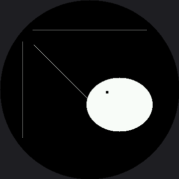

Drawing Pixels¶
Every shape in this book — every eye, eyebrow, and mouth — is built from one thing: a single dot
called a pixel. The pixel() method is the smallest drawing tool the driver gives you, and it
sets exactly one dot.
On the OLED, color was 0 or 1. Here it is a 16-bit RGB565 number, and this lab uses two of them:
config.WHITE (0xFFFF) and config.BLACK (0x0000). Drawing in black is still how you erase.
One Pixel Is the Whole Unit of Measure
 My screen addresses 360 dots across and 360 down — 129,600 pixels, and about 102,000 of them are actually under the glass. Every one of them is two bytes and I control all of them. Every pixel tells a story!
My screen addresses 360 dots across and 360 down — 129,600 pixels, and about 102,000 of them are actually under the glass. Every one of them is two bytes and I control all of them. Every pixel tells a story!
The Warning You Will Feel Immediately¶
Here is the difference that changes how you write code on this display. Every pixel() call is
a separate conversation with the hardware. Setting one dot means sending a command that opens a
drawing window, four bytes of coordinates, and then two bytes of color.
On the OLED, pixel() poked a byte in RAM and cost almost nothing. Run this lab and watch the
dotted rulers appear one dot at a time. That visible crawl is not your imagination — it is the
whole reason shapes.py works in horizontal runs, and it is what the
How Fast Is a Face? lab measures. This screen makes the point
harder than the 1.2" kit's did, too: 360×360 is 129,600 pixels where 240×240 was 57,600, so there
are 2.25 times as many chances to do it the slow way.
| Job | Cheap way | Expensive way |
|---|---|---|
| A row of 100 dots | one hline() |
100 pixel() calls |
| A filled eye | one shapes.ellipse() |
a loop over the bounding box |
| A 5 by 5 catchlight | one fill_rect() |
twenty-five pixel() calls |
| A single highlight dot | pixel() — this is what it is for |
anything else |
Sample Program Code¶
This program uses pixel() three ways: to build dotted rulers, to draw a diagonal one dot at a
time, and to punch a small highlight out of a finished eye.
import config
import shapes
display = config.init_display()
WHITE = config.WHITE
BLACK = config.BLACK
FILL = config.FILL
CENTER_X = config.CENTER_X
CENTER_Y = config.CENTER_Y
display.fill(BLACK)
# A dotted ruler across the middle: one pixel on, one pixel off.
#
# The SPACING did not scale with the screen. Everything else in this port
# got multiplied by 1.5, but "one on, one off" is a one-pixel pattern, and
# one pixel is one pixel on any panel -- so the step stays 2 and this
# ruler simply carries more dots than the smaller screen's did.
#
# The ENDS did change, and not by scaling either. The screen is round: at
# y=60 the safe circle reaches only 117 px either side of center, so the
# ruler runs 66..294 instead of out to the edge of the square.
for x in range(66, 296, 2):
display.pixel(x, 60, WHITE)
# a dotted ruler down the left. x=45 is 135 px off center, which leaves
# just under 100 usable rows above and below the midline -- the further
# from the center line you go, the shorter every line gets on a round
# screen.
for y in range(84, 278, 2):
display.pixel(45, y, WHITE)
# a diagonal drawn one pixel at a time
for i in range(0, 135):
display.pixel(68 + i, 90 + i, WHITE)
# an eye with a catchlight punched out in black pixels. The eye is one
# shapes.ellipse() call -- fast, because it works in rows -- and the
# catchlight is twenty-five individual pixels, which is still fine
# because there are only twenty-five of them.
shapes.ellipse(display, 240, 210, 66, 54, WHITE, FILL)
for dy in range(5):
for dx in range(5):
display.pixel(213 + dx, 183 + dy, BLACK)
Here's what that program draws on the display:

The Catchlight Trick¶
Look closely at the eye. Those twenty-five black pixels in its upper left are a catchlight — the small bright reflection you see in a real eye. Twenty-five dots is all it takes to make a flat white blob start reading as something alive and looking at you.
This is also your first look at drawing in layers. The ellipse() call ran first and filled
the whole shape white. The twenty-five pixel() calls ran second, so they overwrote what was
already there. On a display with no frame buffer, later commands always win — and they win
immediately, right on the glass.
Off-Screen Pixels Just Disappear
 Ask for
Ask for pixel(450, 90, WHITE) and nothing happens — no dot, no error, because x=450 is off the addressable 360 by 360 square entirely. Worse, ask for pixel(15, 15, WHITE) and it is accepted, drawn, and still invisible, because that corner is behind the bezel. Check your coordinates against the circle, not just the 360 by 360 range.
Things to Try¶
- Time the dotted ruler. Wrap the first loop in
ticks_us()readings and print the total. Then draw the same 115 dots with onehline()and time that — the gap is the cost of talking to the display 115 times instead of once. The 1.2" kit's version of this lesson quotes a measured number for this trick, but that number came off a GC9A01; run it here and get your own. - Replace the catchlight with a single
fill_rect(213, 183, 5, 5, BLACK). Same picture, one trip down the wire instead of twenty-five. - Move the catchlight to the other side of the eye and see how it changes where the eye seems to be looking. A few pixels of position carry a surprising amount of meaning.
- Push the horizontal ruler out to
range(30, 330, 2)— the numbers you'd get by scaling the 1.2" kit's ruler by a straight 1.5x. Watch the dots at both ends disappear under the bezel, because moving a coordinate outward on a round screen moves it toward a rim a square screen never had.
References¶
- Screen Coordinates — why a valid coordinate can still be invisible
- How Fast Is a Face? — the lab that measures dots against runs; the 1.2" kit's version of this lab found roughly a 10x gap, but nobody has measured this panel yet
- Drawing Pixels on the 1.2" kit — the same lab at 240×240, before the 1.5x scale
- MicroPython machine.SPI Documentation — the bus every one of those pixel calls travels down